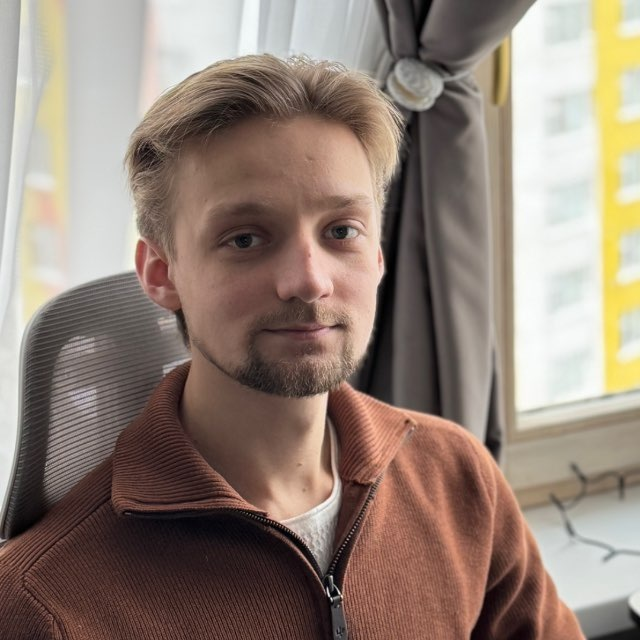

Старт профессионального пути
Посольство России в Венгрии — системный администратор по безопасности
Работа с технической инфраструктурой, доступами, безопасностью, стабильностью систем и внутренними цифровыми процессами.

Разрабатываю цифровые продукты полного цикла: от структуры и интерфейса до серверной логики, интеграций и развёртывания. Создаю сайты, сервисы, калькуляторы, квизы и внутренние системы для бизнеса.
Путь от системного администрирования и безопасности к самостоятельной full-stack-разработке.
Работа с технической инфраструктурой, доступами, безопасностью, стабильностью систем и внутренними цифровыми процессами.
Проектная работа на аутсорсе: доработки сайтов, интерфейсов и отдельных digital-задач для бизнеса.
Полноценные сайты и цифровые продукты под ключ, а также проектные доработки существующих решений. Основные собственные проекты представлены ниже в кейсах.
Интерфейсы, серверная логика, данные, инфраструктура и запуск продукта.
Проекты, где я отвечал за архитектуру, интерфейс, логику и техническую реализацию.
Задача: собрать целостную систему для туров, статей, команды, отзывов и навигации.
Что сделано: архитектура, каталог, поиск, фильтрация, страницы туров, кастомные HTML/CSS/JS-компоненты.
Задача: дать клиенту возможность самостоятельно рассчитать ориентировочную стоимость услуг.
Что сделано: логика расчёта, детализация сметы, формы, копирование результата и отправка заявки.
Задача: создать вовлекающий профориентационный сценарий для детей.
Что сделано: вопросы, визуальный выбор, подсчёт результата, персональный итог и диплом.
Задача: сделать понятный путь покупки военной экипировки и сократить лишние действия.
Что сделано: структура каталога, карточки товаров, адаптив, frontend-логика и пользовательский путь.
Задача: структурировать большое количество материалов для медицинской аудитории.
Что сделано: многостраничная архитектура, навигация, каталогизация материалов и интерфейс.
Задача: понятно представить туристический продукт, маршруты и преимущества компании.
Что сделано: архитектура, презентация направлений, сценарии для клиентов и партнёров.
Подключаюсь к проекту как разработчик, системный инженер и продуктовый партнёр.
Сначала понимаю цель продукта, затем подбираю архитектуру и техническое решение.
От структуры и интерфейса до разработки, интеграций, запуска и поддержки.
Нахожу слабые места в сценариях, интерфейсе и технической реализации.
Беру ответственность за результат, коммуникацию и качество реализации.